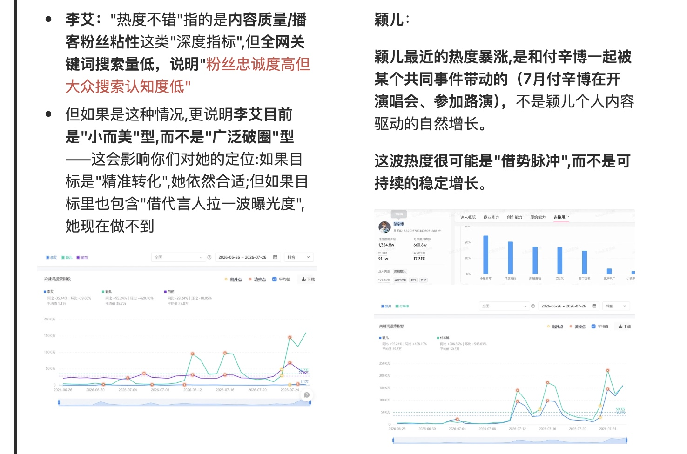
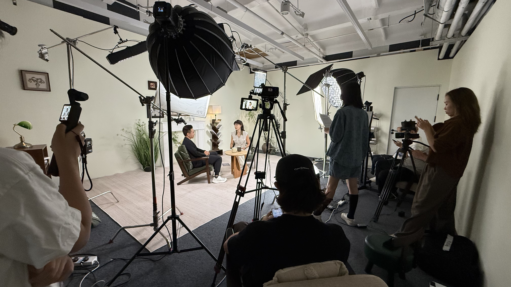

《随心所育》× 叫叫｜代言人访谈内容与宣发
2026p1-cover.jpg
160万上线两周播放
6.97万星图归因成交（元）
正片＋二创内容交付
背景
配合开学季节点营销，借新代言人强化品牌认知，把一次对谈变成可持续传播的内容。
- 筛选：我按代言目标、人群匹配、数据、风险四个维度，用 AI 进行初筛，再背调，并在会上汇报推荐。
- 策划：我参与选题和花絮策划，让品牌信息顺着她真实的表达进入内容。
- 执行：除正片外，我负责花絮拍摄与二创，现场筛选值得二次传播的片段。
复盘
在我看来，代言项目更重要的是找到人物和用户话题的交点：代言人带来第一眼关注，留住用户的是内容。
展开完整过程
01候选对比（汇报笔记截图）
筛选｜先想清楚品牌需要什么样的人
我通过AI、数英、Social Beta等渠道，从代言目标、人群匹配、数据、风险几个维度找人，再逐个查资料筛掉不合适的。最终在两位候选人难取舍时，我拉数据做了整合分析，在会上汇报。

p1-detail-1.jpg02 p1-detail-2.jpg
p1-detail-2.jpg策划文档（脱敏版）
策划｜先接住她的语气，再谈品牌要说什么
她的表达和育儿经历本身就适合进入内容，所以没有把她当"广告人"，选了访谈植入。选题先用 AI 看目标用户最焦虑什么，再结合他们的背景和购买偏好。我参与了选题逻辑、合作内容、花絮策划和花絮剪辑脚本。
p1-detail-2.jpg03现场执行
执行｜现场我负责把"值得拍的"抓出来
我参与北京拍摄，独立负责花絮拍摄和二创。现场没有完全按脚本走，我要判断什么值得拍，再从素材里筛出适合传播的片段。花絮其实是品牌很便宜的真实素材。

p1-detail-3.jpg04成片封面
复盘｜问题不在最后怎么剪，在前面有没有找对人和话题
代言人自带关注度，但没有合适的问题，她的流量和品牌内容还是各说各的。所以我现在看代言人，不只看曝光，更看她能不能把品牌自然带进用户本来就在讨论的问题里。
p1-detail-4.jpg